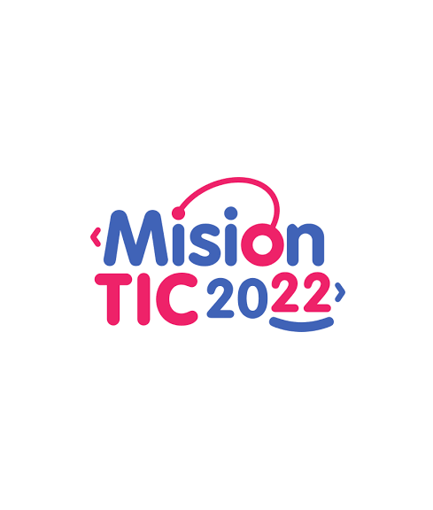
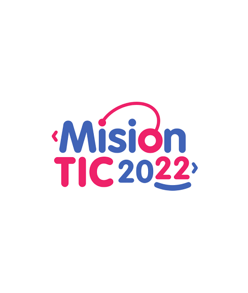

Economista (2017-2021)
Graduado de la Universidad Autónoma de Manizales en economía con énfasis empresarial, adquiriendo por este medio aptitudes en matemáticas, estadística, finanzas, entre otras. Las cuales sentaron las bases necesarias para dar continuidad a un proceso de aprendizaje enfocado al campo de la ciencia de datos y análisis de datos.
Técnico en Sistemas (2014-2016)
Por medio del Instituto Nacional de Aprendizaje (SENA) y su programa de tecnología en sistemas, se adquirió la capacidad de manejo de sistemas información, por medio de apropiación de software especializado en ofimática como las herramientas de Microsoft Office, mantenimiento de hardware y acercamiento a fundamentos de programación.
Programación Basica (2021)  

Por medio del programa Misión TIC 2022 impulsado por el ministerio de tecnologías de la información y comunicaciones, se adquirió en el transcurso de tres diplomados, las nociones básicas de programación en el lenguaje de programación Python. Además de la capacitación en metodologías y ciclos de trabajo en el desarrollo de proyectos de ingeniería de software mediante el lenguaje de programación JAVA y herramientas de gestión de proyectos como trello.
Ciencia de Datos (2021-2022)
Por medio de la plataforma de educación online platzi, se presenta un ciclo de constante aprendizaje principalmente enfocado en el sector de la ciencia de datos y el análisis de datos, mediante cursos enfocados a lenguajes de programación como Python y sus aplicaciones en el manejo e interpretación de la información, además de la predicción de la misma por medio de modelos machine learning.
Adicionalmente, el enfoque al manejo y gestión de bases de datos por medio de motores como MySQL o PostgreSQL y la extracción de información relevante por medio de querys ; visualización de información por medio de software especializado en BI como Power BI, DataStudio o Tableau y habilidades blandas que permiten agilizar el proceso de trabajo, además de establecer comunicación efectiva con los equipos de trabajo.